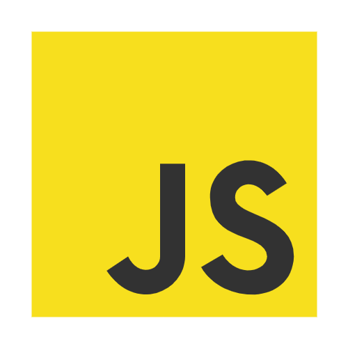
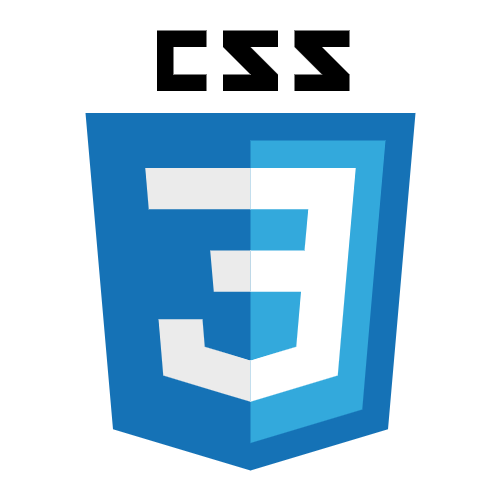
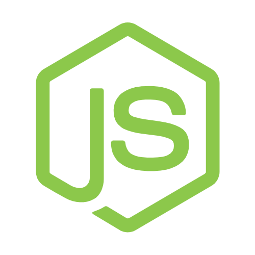
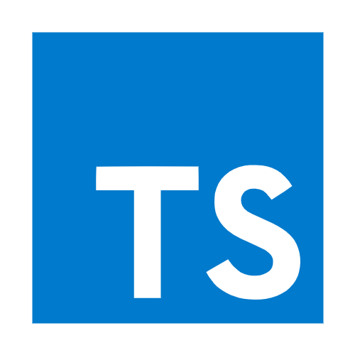
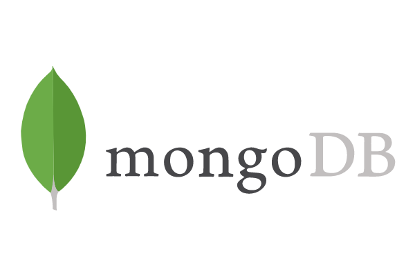
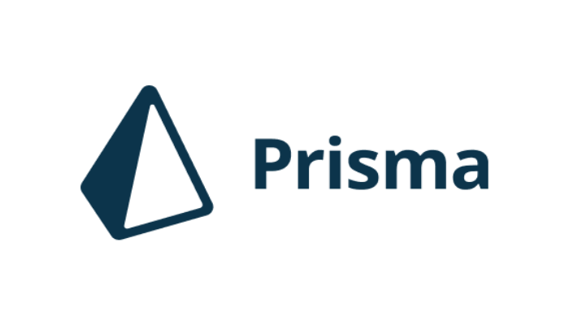
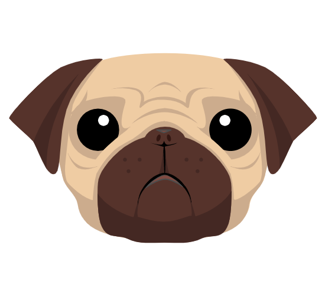
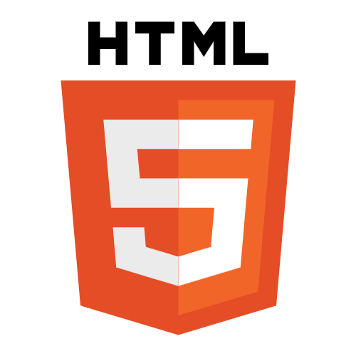
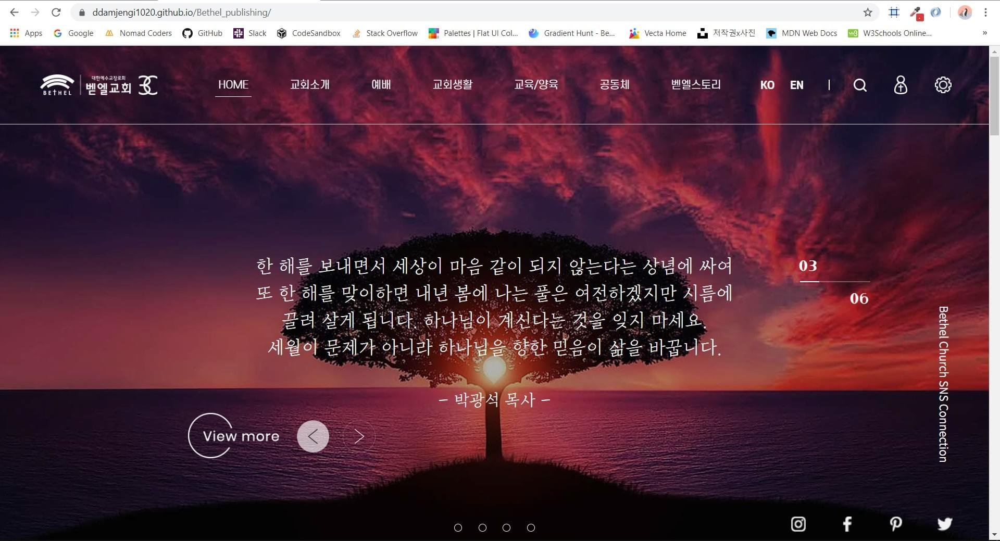

about
끊임없이 발전하는 개발자가 되고싶습니다.
'정년퇴직이 없는 직업을 찾자' 라는 생각으로 대학교 재학중 도자기 수업을 통해 도예가의 길을 걸었었습니다. 생활자기 생산하는 회사에서 일해보며 느낀 것은 "실무경험"의 중요성이었습니다. 공방에서의 배움의 시간이 길진 않았지만 공방에서 배운 기술들을 다시 재정비 하고 어떤 것은 다시 배우는 과정을 거쳤습니다.
프로그래밍도 사람들과의 소통, 최신기술을 경험하는데 있어서 실무경험이 중요하다고 생각합니다. 새로운 분야로 도전하는 중이지만 함께 일할 기회가 주어진다면 스스로 공부하고 능동적으로 배우고 먼저 행동하는, 발전하는 개발자가 되겠습니다!
skills
검색해가며 작업할 수 있음

수월하게 작업가능함

projects
인스타그램 클론코딩
카카오톡 클론을 마친 후 스스로 만들어본 UI 작업물입니다. 강의를 듣지않으며 혼자 만들려다 보니 BEM규칙에 따라 이름을 짓는 것이 어렵다는 것을 알게 되었습니다.
인스타그램 홈페이지를 보며 HTML을 직접 계획하고 작성해본 것으로 코딩에 흥미를 붙일 수 있었던 작업물입니다.
Github

웹디자이너 동생과 함께 만든 교회 홈페이지 입니다.
디자인을 받고 피드백 받아가며 HTML, CSS로 퍼블리싱까지 작업을 했습니다. 최종 목표는 배포까지이며 동적인부분은 협업하는 동생과 의논후 반영할 예정입니다.
Github
교회 홈페이지 퍼블리싱
웹디자이너 동생과 함께 만든 교회 홈페이지 입니다.
디자인을 받고 피드백 받아가며 HTML, CSS로 퍼블리싱까지 작업을 했습니다. 최종 목표는 배포까지이며 동적인부분은 협업하는 동생과 의논후 반영할 예정입니다.
Github
크롬-모멘텀 클론코딩
Local Storage를 이용한 작업물입니다.
localStorage의 기본 개념을 익혔고, 크롬-모멘텀의 페이지를 새로고침했을때에도 정보가 그대로 남는 기능과 OpenWeather API를 사용하여 현재 내 위치의 기온을 나타내주는 기능을 구현하였습니다.
Github